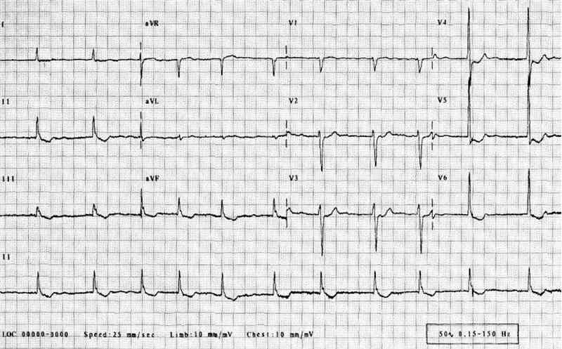

Bienvenue Sur Medical Education
Fibrillation auriculaire
Spécialité : cardiologie /
Points importants
-
La fibrillation auriculaire est une tachycardie supraventriculaire caractérisée par une activation atriale anarchique entrainant une perte de la systole atriale et une contraction irrégulière des ventricules
-
La prévalence de la fibrillation auriculaire est de 1 % dans la population générale et est corrélée avec l’âge, la sévérité d’une valvulopathie ou la présence d’une insuffisance cardiaque
-
La gravité de l'ACFA est liée aux risques thromboemboliques et à la cardiopathie sous-jacente
-
L'ACFA favorise en effet la survenue d'accidents thromboemboliques, notamment d'AVC qu'il importe de prévenir
-
Il ne faut pas vouloir réduire à tout prix une fibrillation auriculaire surtout si elle est ancienne, juste ralentir la cadence ventriculaire pour améliorer la tolérance
-
Le traitement dépend du type d'ACFA :
-
l'ACFA paroxystique récidivante, se terminant spontanément en moins de 7 jours, généralement en 48h, avec des récidives entrecoupées d'épisodes en rythme sinusal
-
l'ACFA récurrente, nécessitant un choc électrique externe ou un traitement pharmacologique pour être réduite, avec des récurrences (> 7 jours) entrecoupés d'épisodes en rythme sinusal
-
l'ACFA permanente (la cardioversion est inefficace voire dangereuse)
Présentation clinique / CIMU
SIGNES FONCTIONNELS
-
Asymptomatique
-
Palpitations, dyspnée, précordialgie, asthénie, lipothymie, syncope
CONTEXTE
La fibrillation auriculaire est une tachycardie supraventriculaire caractérisée par une activation atriale anarchique entrainant une perte de la systole atriale et une contraction irrégulière des ventricules
La prévalence de la fibrillation auriculaire est de 1 % dans la population générale et est corrélée avec l’âge, la sévérité d’une valvulopathie ou la présence d’une insuffisance cardiaque
- l'ACFA paroxystique récidivante, se terminant spontanément en moins de 7 jours, généralement en 48h, avec des récidives entrecoupées d'épisodes en rythme sinusal
- l'ACFA récurrente, nécessitant un choc électrique externe ou un traitement pharmacologique pour être réduite, avec des récurrences (> 7 jours) entrecoupés d'épisodes en rythme sinusal
- l'ACFA permanente (la cardioversion est inefficace voire dangereuse)
Présentation clinique / CIMU
SIGNES FONCTIONNELS
- Asymptomatique
- Palpitations, dyspnée, précordialgie, asthénie, lipothymie, syncope
CONTEXTE
Terrain
- Elle peut être idiopathique
Antécédents
- Cardiopathie sous jacente
- HTA
- Valvulopathie, le plus souvent mitrale
- Coronaropathies
- Insuffisance cardiaque
- Cardiopathie congénitale (communication inter auriculaire)
Circonstances de survenue
-
Iatrogénie
-
Infection , fièvre
-
Pathologie pulmonaire aigue ou chronique (BPCO, embolie pulmonaire)
EXAMEN CLINIQUE
Interrogatoire
- Il faut définir le type de symptômes
- Caractériser le type de l'ACFA
- La date de début, la fréquence, la durée
- Les facteurs déclenchant s'ils existent
Clinique
- Bruits du coeur irréguliers plus ou moins rapides
- La PA peut être basse
- Recherche d'anomalies auscultatoires témoignant d'une valvulopathie ou péricardite
Complications
- Hémodynamiques : insuffisance cardiaque aiguë avec oedème pulmonaire et/ou foie cardiaque
- Thromboembolique : AVC, ischémie de membre
EXAMENS PARACLINIQUES SIMPLES
ECG
- L'activité atriale normale a disparu, remplacée par des ondes f de fibrillation irrégulières et rapides (300-400/min) mieux visibles en V1 et les complexes ventriculaires, dont la fréquence varie généralement de 140 à 180 bpm, restent fins et irréguliers en l'absence de bloc de branche
 _258 ECG : fibrillation auriculaire
CIMU
- Tri 2 à 5 en fonction de la gravité clinique
Signes paracliniques
BIOLOGIQUE
-
NFS, plaquettes hémostase en vue de la prescription d'anticoagulants
-
Ionogramme et créatinine
-
Glycémie
-
TSH
-
Troponine si douleur thoracique ou modification électrique
IMAGERIE
Aux urgences
-
Radio de thorax si douleur thoracique ou dyspnée :
- étude du parenchyme pulmonaire et vascularisation
- recherche de cardiomégalie
-
Echographie transthoracique si possible, en règle différée :
- évaluation de la fonction ventriculaire gauche
- recherche de valvulopathie
- recherche d'hypertrophie ventriculaire gauche
- recherche d'atteinte péricardique
En cardiologie
-
Echographie trans-oesophagienne :
- recherche d'un thrombus
- guide la cardioversion si elle est envisagée
-
Holter ECG :
- précise la caractéristique de l'arythmie
-
Epreuve d'effort :
- reproduit une FA induite par l'effort
- exclut le risque ischémique avant un traitement anti-arythmique de classe 1
-
Etude électrophysiologique :
- recherche un trouble conductif associé et la possibilité d'un traitement ablatif
Diagnostic étiologique
-
Cardiopathie, notamment valvulopathie, cardiopathie hypertensive
-
Métabolique dont l'hyperthyroïdie
-
Intoxication éthylique aiguë
Diagnostic différentiel
-
L'ACFA s'accompagnant de rythmes ventriculaires lents et réguliers : bloc auriculo-ventriculaire complet ou pace maker
-
Bloc de branche préexistant responsable de complexes QRS larges. Le caractère irrégulier et les ondes de fibrillation éliminent la tachycardie ventriculaire à ne pas confondre avec l'ACFA du syndrome de Wolff Parkinson White dont la fréquence ventriculaire n'est régie que par la période réfractaire antérograde du faisceau de Kent et peut donc être très rapide voire dégénérer en FV
-
La maladie rythmique de l'oreillette avec accès paroxystique de tachyarythmie atriale alternant avec un rythme sinusal ou jonctionnel parfois très lents
Traitement
STABILISATION INITIALE
-
Scope
-
Voie veineuse périphérique
-
Prévention du risque embolique en cas de durée supérieure à 48h ou de valvulopathie avec HBPM dose curative en fonction de l'âge et de la fonction rénale, sinon HNF 500UI/Kg/j
-
Si mauvaise tolérance hémodynamique ou coronarienne :
-
contrôle de la fréquence ventriculaire par un bêtabloquant (métoprolol, propanomol) ou calcibloqueur (diltiazem ou vérapamil en l'absence de syndrome de Wolff Parkinson White) en absence d'insuffisance cardiaque ou un digitalique en l'absence de syndrome de Wolff Parkinson White ou une ampoule d'amiodarone sur au moins 10 min dans le cas contraire
-
choc électrique externe (risque thrombo-embolique si trouble du rythme > 48 heures) en cas d'arrêt circulatoire ou de trouble de la conscience sinon sous sédation
-
Traitement des complications (OAP notamment)
SUIVI DU TRAITEMENT
Diagnostic différentiel
- L'ACFA s'accompagnant de rythmes ventriculaires lents et réguliers : bloc auriculo-ventriculaire complet ou pace maker
- Bloc de branche préexistant responsable de complexes QRS larges. Le caractère irrégulier et les ondes de fibrillation éliminent la tachycardie ventriculaire à ne pas confondre avec l'ACFA du syndrome de Wolff Parkinson White dont la fréquence ventriculaire n'est régie que par la période réfractaire antérograde du faisceau de Kent et peut donc être très rapide voire dégénérer en FV
- La maladie rythmique de l'oreillette avec accès paroxystique de tachyarythmie atriale alternant avec un rythme sinusal ou jonctionnel parfois très lents
Traitement
STABILISATION INITIALE
-
Scope
-
Voie veineuse périphérique
-
Prévention du risque embolique en cas de durée supérieure à 48h ou de valvulopathie avec HBPM dose curative en fonction de l'âge et de la fonction rénale, sinon HNF 500UI/Kg/j
-
Si mauvaise tolérance hémodynamique ou coronarienne :
-
contrôle de la fréquence ventriculaire par un bêtabloquant (métoprolol, propanomol) ou calcibloqueur (diltiazem ou vérapamil en l'absence de syndrome de Wolff Parkinson White) en absence d'insuffisance cardiaque ou un digitalique en l'absence de syndrome de Wolff Parkinson White ou une ampoule d'amiodarone sur au moins 10 min dans le cas contraire
-
choc électrique externe (risque thrombo-embolique si trouble du rythme > 48 heures) en cas d'arrêt circulatoire ou de trouble de la conscience sinon sous sédation
-
Traitement des complications (OAP notamment)
SUIVI DU TRAITEMENT
- contrôle de la fréquence ventriculaire par un bêtabloquant (métoprolol, propanomol) ou calcibloqueur (diltiazem ou vérapamil en l'absence de syndrome de Wolff Parkinson White) en absence d'insuffisance cardiaque ou un digitalique en l'absence de syndrome de Wolff Parkinson White ou une ampoule d'amiodarone sur au moins 10 min dans le cas contraire
- choc électrique externe (risque thrombo-embolique si trouble du rythme > 48 heures) en cas d'arrêt circulatoire ou de trouble de la conscience sinon sous sédation
Traitement antithrombotique au long cours en fonction du risque
-
Facteurs de risque modéré :
- âge = 75 ans
- HTA
- insuffisance cardiaque
- FEVG < 35%
- diabète
-
Facteurs de risque élevé :
- ATCD d'AVC, AIT ou embole systémique
- rétrécissement mitral
- valve cardiaque prothétique mécanique
-
Traitement :
- pas de facteur de risque : aspirine 75-325 mg/j
-
1 facteur de risque modéré :
- aspirine 75-325 mg/j ou
- AVK (INR 2-3 ; cible 2,5)
- 1 facteur de risque élevé ou > 1 facteur de risque modéré : AVK (INR 2-3 ; cible 2,5)
-
Il est à noter que le score de CHADS2 est utilisé par de nombreux médecins en pratique courante pour évaluer le risque thrombo embolique : cardiopathie 1 point, HTA 1 point, âge > 75 ans 1 point, diabète 1 point, AVC 2 points :
- si le score est compris entre 0 et 1 : traitement par antiagrégants plaquettaires
- si le score est > 2 : traitement par AVK recommandé
Contrôle de la fréquence cardiaque
- Bêtabloquant : métoprolol, propranolol (PO) ou équivalent injectable
- Inhibiteurs calciques bradycardisants : diltiazem, vérapamil
- En cas d'insuffisance cardiaque : digoxine ou amiodarone (150 mg)
Réduction de l'ACFA relève de la prise en charge spécialisée
- Cardioversion électrique
- Cardioversion pharmacologique
Traitement médicamenteux de maintien de rythme sinusal (après avis spécialisé)
- Antiarythmique de classe III : amiodarone
- Antiarythmique de classe Ic : flécaïnide, propafénone
- Antiarythmique de classe III : sotalol
MEDICAMENTS
-
Digoxine : 500 µg injectés lentement soit 1 ampoule ou jusqu'à la dose totale de 1000 µg en 24 heures, à continuer avec les doses d'entretien par voie orale, ou, si la voie orale est impossible, par voie IV, 250 à 500 µg/j ou tous les 2 jours, selon les résultats
-
Propranolol : 1 mg/min sans dépasser 5 à 10mg IVL sous ECG ou
-
Esmolol : shéma posologique, séquence de 5 min : dose de charge de 500 µg/kg/min en 1min puis perfusion d’une dose d’entretien de 50 µg/kg/min en 4 min. Tant que l’effet thérapeutique recherché n’est pas atteint, recommencer la séquence de 5 min avec la même dose de charge puis dose d’entretien augmentée de 50 µg/kg/min à chaque séquence sans dépasser 200 µg/kg/min puis quand l’objectif est atteint 50 à 200 µg/kg/min puis relais par un anti-arythmique de plus longue durée d'action
- Diltiazem : 0,25 à 0,30 mg/kg IV 2 min ou équivalent PO
- Vérapamil : 5 à 10 mg IVL 2 min ou 75 à 150 µg/kg, soit 1 à 2 amp à répéter si besoin après 10 min ou équivalent PO
Surveillance
CLINIQUE
-
Conscience, scope avec FC, SpO2, PA
-
Recherche de mauvaise tolérance avec signes d'insuffisance cardiaque ou complications thrombo-emboliques
PARACLINIQUE
-
ECG
Devenir / orientation
CRITERES D'ADMISSION
-
Toute ACFA mal supportée ou sur pathologie cardiaque sous-jacente doit être hospitalisée en cardiologie
Bibliographie
-
Recommandation HAS
-
Urgences médico-chirurgicale de l'adulte. P Carli, B. Riou, C. Telion page 215
-
Urgences médicales, Axel Ellrodt pages 297
-
American College of cardiology, American Heart Association, European Society of Cardiology, European Heart rhytm Association, Heart Rhytm Society, Fuster V et al. ACC/AHA/ESC 2006 guidelines for the management of patients with atrial fibrillation: a report of the ACC/AHA task force on practice guidelines and the ESC committee for practice guidelines. Circulation 2006; 114: 257-354
-
National institute for health and clinical excellence. The management of atrial fibrillation. NICE clinical guidelines 36. London: NICE; 2006
-
Elaine M. Hylek, M.D et al. Effect of Intensity of Oral Anticoagulation on Stroke Severity and Mortality in Atrial Fibrillation NEJM Volume 349:1019-1026 September 11, 2003 Number 11
Devenir / orientation
CRITERES D'ADMISSION
- Toute ACFA mal supportée ou sur pathologie cardiaque sous-jacente doit être hospitalisée en cardiologie
Bibliographie
-
Recommandation HAS
-
Urgences médico-chirurgicale de l'adulte. P Carli, B. Riou, C. Telion page 215
-
Urgences médicales, Axel Ellrodt pages 297
-
American College of cardiology, American Heart Association, European Society of Cardiology, European Heart rhytm Association, Heart Rhytm Society, Fuster V et al. ACC/AHA/ESC 2006 guidelines for the management of patients with atrial fibrillation: a report of the ACC/AHA task force on practice guidelines and the ESC committee for practice guidelines. Circulation 2006; 114: 257-354
-
National institute for health and clinical excellence. The management of atrial fibrillation. NICE clinical guidelines 36. London: NICE; 2006
-
Elaine M. Hylek, M.D et al. Effect of Intensity of Oral Anticoagulation on Stroke Severity and Mortality in Atrial Fibrillation NEJM Volume 349:1019-1026 September 11, 2003 Number 11
Auteur(s) : Mariève BILLEMONT